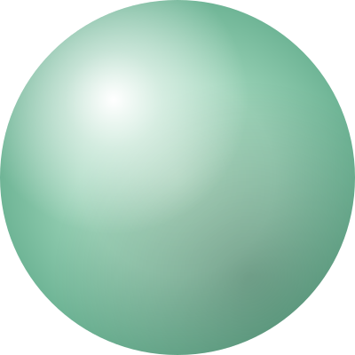
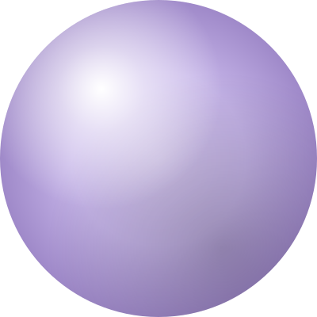
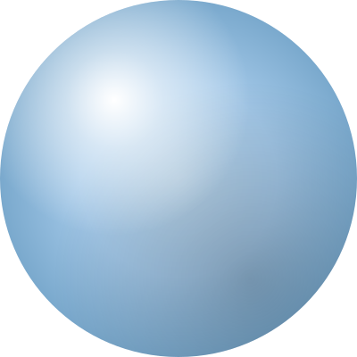

Декоративные объёмные формы — фирменный знак системы. Доступны как CSS-классы (через components.css) и как готовые SVG-векторы.



Удобно, когда нужно вставить сферу в готовый макет (Figma, Canva, Photoshop) или в письмо без CSS.
<img src="ds/assets/sphere-malachite.svg" width="400">
.ds-sphereВнутри HTML-документа: гайды, шаблоны, страницы. Размер задаёшь стилем — без потери качества на любом масштабе.
<div class="ds-sphere malachite"
style="width:78mm;height:78mm;
right:-22mm;bottom:-30mm;"></div>
Когда нужно вставить вне HTML — в Figma, презентацию, e-mail. Можно открыть в редакторе и подкрутить цвета.
<img src="sphere-malachite.svg"
width="400" height="400">
• Декоративные сферы — всегда объёмные.
• Сферы с цифрами или текстом внутри — плоские, без градиента.
• На каждой контентной странице — одна фоновая сфера внизу.
• Цвета чередуются по страницам: малахит → лаванда → небо.
• Размеры чередуются: большая (≈80mm) → средняя (≈50mm).
• Сфера частично выходит за край страницы.
• z-index: 0 — всегда под контентом, не пересекается с текстом.